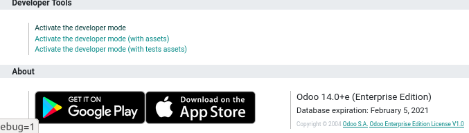
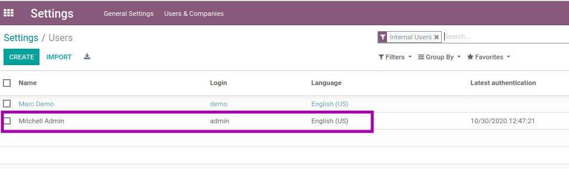
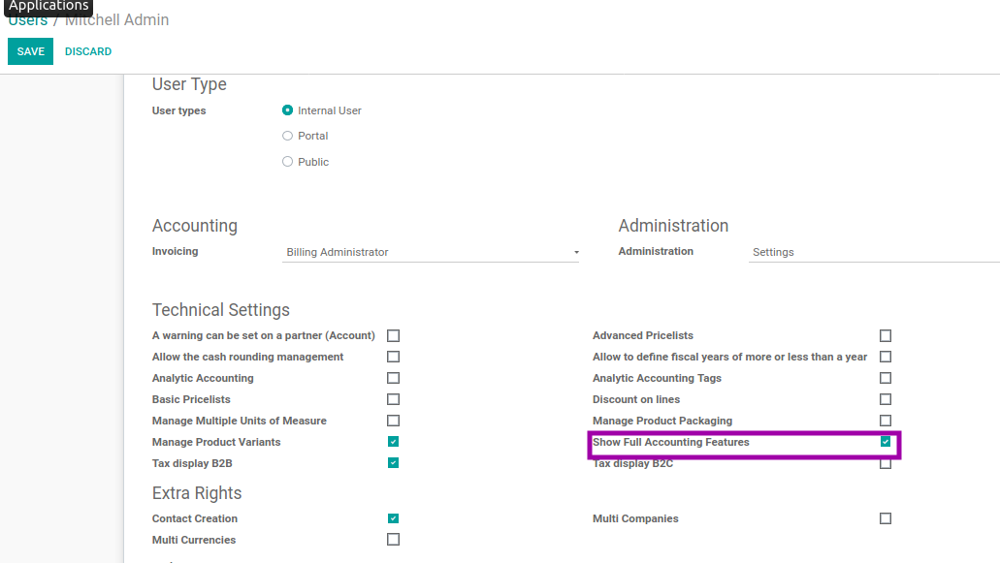
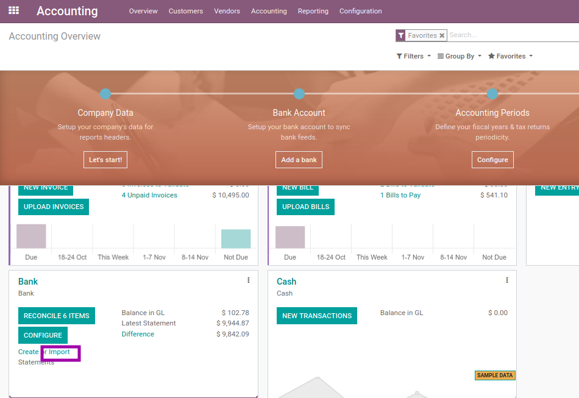

Maintainers
- Carlos Ramirez cramirez@indexacorp.com
- Fernando Figuereo rfiguereo@indexacorp.com

This module will add functionalities to manage bank statements for Banco BHD.
Table of contents
To use these modules, you must have previously installed the Invoicing Management application



The use of these modules will allow us to import and validate the bank statements issued by the different entities, and keep a control of these in our accounting application. Once the necessary permissions have been configured and the modules are installed:


Once the file is loaded odoo shows us the file in detail, it requires linking a partner or counterpart to which that bank statement will be assigned, if in our system any of these is already linked, it is added automatically and allows us to validate.
In case you do not have a partner or counterpart already linked to the bank account that brings the statement, it can be added manually.
It is recommended that before importing any statement, have already registered the partner or counterpart to be received. If all the previous cases are already covered, it only remains to validate the transactions.